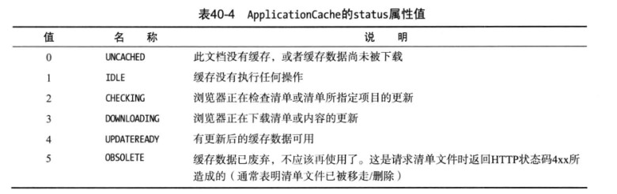
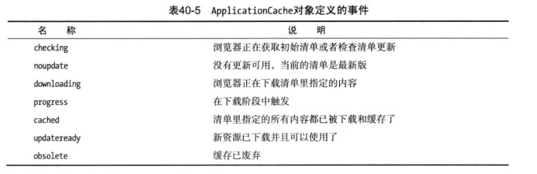

创建离线Web应用程序
离线应用程序缓存功能允许我们指定Web应用程序所需的全部资源，这样浏览器就能在加载HTML文档时把他们都下载下来。通过这种方式，用户即使无法访问网络也能继续使用我们的应用程序。
离线Web应用程序
定义清单
清单（manifest）允许我们列出离线工作所需的全部资源。
清单文件是一个简单的文本文件。第一行始终是CACHE MANIFEST，然后我们再列出应用程序所需的资源，每个文本行列一个。
清单文件没有固定的命名方案，但是.appcache是最常用的。我把清单文件保存为demo.appcache
manifest的典型结构:
使用清单
在文档中添加给html元素添加manifest属性即可使用清单，如下：
监测浏览器状态
| 用法 | 说明 | 返回 |
|---|---|---|
| window.navigator.onLine | 如果确定为离线返回false，如果不能确定是否离线，返回true | 布尔值 |
使用离线缓存
可以通过window.applicationCache属性使用离线缓存。该属性返回一个ApplicationCache对象。ApplicationCache对象的属性或方法有：
| 成员 | 说明 | 返回 |
|---|---|---|
| update() | 更新缓存文件确保清单里的文件都下载了最新版本 | void |
| swapCache() | 交换当前缓存与较新的缓存 | void |
| status | 返回缓存的状态 | 数值 |
status属性值如下：

除了这些方法和属性之外，ApplicationCache对象还定义了一组事件，它们在缓存状态改变时触发。

我们可以结合这些方法与status属性的值来显式控制离线缓存。
制作更新
替换缓存清单上指定的缓存文件（不要修改文件名），修改清单文件（清单文件必须改动浏览器才会下载更新，可以加个空格）获取更新
调用update()方法，获取更新，此时status属性变为UPDATEREADY。此时，浏览器已经下载了修改过的内容，但更新还未被应用到我们正在使用的缓存中。应用更新
调用swapCache()方法，更新的内容被应用到应用程序的离线缓存中。